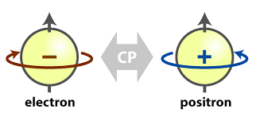
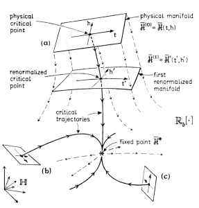
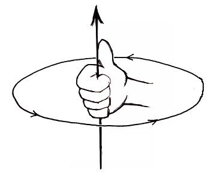

Classical and Quantum Fluids
“Aim of the research is to develop analytical and computational methods for condensed and soft matter starting from the fundamental many-body equations. Apart from the few analytically exactly solvable models our principal instruments, guided by the various sum-rules, are Integral Equation Theory, Density Functional Theory, Thermodynamic Perturbation Theory, Association Theory, and Monte Carlo simulations which can find exact properties of many-body systems. We are combining these approaches to create new methods and to test the accuracy of calculations on materials. Current studied materials include colloidal suspensions, ionic liquids, polymer mixtures, the electron fluid, the polaron, and boson fluids (like 4He, 4He-H2 mixtures, ...). We investigate the structure and thermodynamic properties of the materials including their phase transitions like the gas-liquid-(glass)-solid first order ones and the superfluid-superconducting second order ones, the percolation threshold, the clustering, the localization, the demixing, the polydispersity, and surface properties.
Lately we started working on euclidean relativistic covariant and ultralocal quantum scalar field theories through Path Integral Monte Carlo of lattice field theory subject to different kinds of quantization procedures. ”
"Generating functionals, consistency, and uniqueness in the integral equation theory of liquids"
(cond-mat/0304449)
"Stability of the iterative solutions of integral equations as one phase freezing criterion"
(cond-mat/0305531)
"Direct correlation functions of the Widom-Rowlinson model"
(cond-mat/0308433)
"Computer simulation study of the closure relations in hard sphere fluids"
(cond-mat/0402491)
"Stability boundaries, percolation threshold, and two phase coexistence for polydisperse fluids of adhesive colloidal particles"
(cond-mat/0410618)
"Thermodynamic instabilities of a binary mixture of sticky hard spheres"
(cond-mat/0505172)
"Multicomponent adhesive hard sphere models and short-ranged attractive interactions in colloidal or micellar solutions"
(cond-mat/0611175)
"Phase behavior of polydisperse sticky hard spheres: Analytical solutions and perturbation theory"
(cond-mat/0611177)
"Phase behavior of weakly polydisperse sticky hard spheres: Perturbation theory for the Percus-Yevick solution"
(cond-mat/0608714)
"Patchy sticky hard spheres: Analytical study and Monte Carlo simulations"
(arXiv:0710.2356)
"Fluids of spherical molecules with dipolarlike nonuniform adhesion: An analytically solvable anisotropic model"
(arXiv:0807.0384)
"Penetrable Square-Well fluids: Exact results in one dimension"
(arXiv:0804.3703) Featured in the SkLogWiki
"Penetrable-Square-Well fluids: Analytical study and Monte Carlo simulations"
(arXiv:0907.5559) Featured in the SkLogWiki
"Local orientational ordering in fluids of spherical molecules with dipolar-like anisotropic adhesion"
(arXiv:0912.1801)
"Thermodynamic consistency of energy and virial routes: An exact proof within the linearized Debye-Hückel theory"
(arXiv:0910.1670) Featured among the Top 14 most downloaded JCP article in November 2009
"A Numerical Test of a High-Penetrability Approximation for the One-Dimensional Penetrable-Square-Well Model"
(arXiv:1005.5485)
"Cluster theory of Janus particles", erratum
(arXiv:1012.1820) Featured among the Top 10 most downloaded SM articles in February 2011 RSC Blog RSC Blog
"Phase diagram of the penetrable square well-model"
(arXiv:1101.0708) Featured in the SkLogWiki
"Field theoretical approach to a dense polymer with an ideal binary mixture of clustering centers"
(arXiv:1106.6076)
"The penetrable square-well model: Extensive versus non-extensive phases"
(arXiv:1106.1750) Featured in the SkLogWiki
"Nonadditive hard-sphere fluid mixtures. A simple analytical theory"
(arXiv:1107.4703) Supplemental material.
"A cluster theory for a Janus fluid"
(arXiv:1201.6256)
"The structure of colloidosomes with tunable particle density: Simulation vs experiment", summary
(arXiv:1205.1743)
"Janus fluid with fixed patch orientations: Theory and simulations"
(arXiv:1212.5540)
"Multicomponent fluid of nonadditive hard spheres near a wall"
(arXiv:1302.0525)
"Phase diagrams of Janus fluids with up-down constrained orientations"
(arXiv:1310.5044)
"Depletion force in the infinite-dilution limit in a solvent of nonadditive hard spheres"
(arXiv:1404.2039)
"Wertheim and Bjerrum-Tani-Henderson theories for associating fluids: A critical assessment"
(arXiv:1408.0031)
"Wertheim perturbation theory: Thermodynamics and structure of patchy colloids"
(arXiv:1505.06753)
"Bridging and depletion mechanisms in colloid-colloid effective interactions: A reentrant phase diagram"
(arXiv:1503.04714)
"The Square-Shoulder-Asakura-Oosawa model"
(arXiv:1602.02354)
"Andersen-Weeks-Chandler perturbation theory and one-component sticky-hard-spheres", Springer Nature SharedIt
(arXiv:1704.03131)
"Effect of quantum dispersion on the radial distribution function of a one-component SHS fluid"
(arXiv:1804.01844)
"From the Liouville to the Smoluchowski equation for a colloidal solute particle in a solvent"
(arXiv:1809.08395)
"Finite-size effects and thermodynamic limit in one-dimensional Janus fluids"
(arXiv:2107.13883)
"Decay of correlations and related sum rules in a layered classical plasma"
"Coordinate space form of interacting reference response function of d-dimensional jellium"
"Some properties of short-range correlations for electrons in quantum wires"
"Localization of acoustic polarons at low temperatures: A path integral Monte Carlo approach"
(arXiv:1209.5975)
"Low temperature acoustic polaron localization"
(arXiv:1212.6739)
"Hellmann and Feynman theorem versus diffusion Monte Carlo experiment"
(arXiv:1301.6827)
"The restricted primitive model of ionic fluids with nonadditive diameters"
(arXiv:1302.2473)
"Monte Carlo simulation of the nonadditive restricted primitive model of ionic fluids: Phase diagram and clustering"
(arXiv:1304.6757) Featured in the Kaleidoscope of PRE.
"Radial distribution function in a Diffusion Monte Carlo simulation of a Fermion fluid between the ideal gas and the Jellium model"
(arXiv:1304.7298)
"Gas-liquid coexistence for the bosons square-well fluid and the 4He binodal anomaly"
(arXiv:1408.0065)
"Quantum Gibbs ensemble Monte Carlo"
(arXiv:1408.5640)
"Two-phase coexistence for hydrogen-helium mixtures"
(arXiv:1507.01809)
"Supercooled superfluids in Monte Carlo simulations"
(arXiv:1601.00830)
"One-dimensional fluids with second nearest-neighbor interactions", Springer Nature SharedIt
(arXiv:1708.07477)
"White-dwarfs equation of state and structure: The effect of temperature" (arXiv:1709.06064)
"Two component boson-fermion plasma at finite temperature"
(arXiv:1804.01607)
"One-component fermion plasma on a sphere at finite temperature"
(arXiv:1806.02153)
"Form invariance of the moment sum-rules for jellium with the addition of short-range terms in the pair-potential", Springer Nature SharedIt
(arXiv:1911.10479)
"Jellium at finite non zero temperature using the restricted worm algorithm", Springer Nature SharedIt
(arXiv:2103.03720)
"Jellium at finite temperature"
(arXiv:2110.07527)
"Decay of correlations and related sum rules in a layered classical plasma"
"Coordinate space form of interacting reference response function of d-dimensional jellium"
"Some properties of short-range correlations for electrons in quantum wires"
"Pressures for a One-Component Plasma on a Pseudosphere", Springer Nature SharedIt
(cond-mat/0207525)
"Two dimensional one-component plasma on a Flamm's paraboloid", Springer Nature SharedIt
(arXiv:0806.1075)
"Non existence of a phase transition for the Penetrable Square Well model in one dimension"
(arXiv:1007.1513 ) Featured in the SkLogWiki
"Two component plasma in a Flamm's paraboloid"
(arXiv:1204.0624)
"The density of a fluid on a curved surface"
(arXiv:1210.0392)
"Quantum Gibbs ensemble Monte Carlo"
(arXiv:1408.5640)
"Bridging and depletion mechanisms in colloid-colloid effective interactions: A reentrant phase diagram"
(arXiv:1503.04714)
"Fourth moment sum rule for the charge correlations of a two-component classical plasma", Springer Nature SharedIt
(arXiv:1603.01242)
"The Square-Shoulder-Asakura-Oosawa model"
(arXiv:1602.02354)
"Exact results for one dimensional fluids through functional integration", erratum, Springer Nature SharedIt
(arXiv:1603.06514)
"One-dimensional fluids with positive potentials", Springer Nature SharedIt
(arXiv:1701.01456)
"The moment sum-rules for ionic liquids at criticality"
(arXiv:1711.05830)
"White-dwarfs equation of state and structure: The effect of temperature" (arXiv:1709.06064)
"Plasma living in a curved surface at some special temperature"
(arXiv:1904.04066)
"Form invariance of the moment sum-rules for jellium with the addition of short-range terms in the pair-potential", Springer Nature SharedIt
(arXiv:1911.10479)
"How should we choose the boundary conditions in a simulation which could detect anyons in one and two dimensions?", Springer Nature SharedIt
(arXiv:2002.05920)
"Finite-size effects and thermodynamic limit in one-dimensional Janus fluids"
(arXiv:2107.13883)
"Affine quantization of (φ4)4 succeeds while canonical quantization fails"
(arXiv:2012.09991v2)
"Monte Carlo evaluation of the continuum limit of (ϕ12)3"
(arXiv:2011.09862v3)
"Monte Carlo evaluation of the continuum limit of the two-point function of the Euclidean free real scalar field subject to affine quantization", Springer Nature SharedIt
(arXiv:2103.06746)
"Monte Carlo evaluation of the continuum limit of the two-point function of two Euclidean Higgs real scalar fields subject to affine quantization"
(arXiv:2107.08601)
"Eliminating Nonrenormalizability Helps Prove Scaled Affine Quantization of φ44 is Nontrivial"
(arXiv:2109.13447v2)
"Kinetic Factors in Affine Quantization and Their Role in Field Theory Monte Carlo"
(arXiv:2012.09991v3)
"Scaled Affine Quantization of φ44 in the Low Temperature Limit"
(arXiv:2203.05988)
"Scaled Affine Quantization of Ultralocal φ42 a comparative Path Integral Monte Carlo study with Scaled Canonical Quantization"
(arXiv:2109.13447v4)
"The Magnificent Realm of Affine Quantization: valid results for particles, fields, and gravity"
(arXiv:2303.13792) (preprints202304.1134.v1)
"Scaled Affine Quantization of φ123 is Nontrivial"
(arXiv:2011.09862v5)
"Static screening in a degenerate electron plasma"
(arXiv:2305.04863)(SSRN:4649008)
"Wigner crystallization versus Goldstone theorem in a 2D surface one component plasma"
(arXiv:2305.04863v2)(SSRN:4651897)
"Thermodynamic limit of the free electron gas on a circle"
(arXiv:2302.05480)(SSRN:4612213)
Some lecture notes:
Notes on Jellium
We discuss the static screening in the Random Phase Approximation (RPA) of the Hartree potential of a degenerate electron gas explaining the Friedel oscillations as extracted from the book "Coulomb liquids" by Norman H. March and Mario P. Tosi (3 pages).
Notes on Quantum Monte Carlo
We discuss random walk methods in the first lecture. In the second lecture we discuss variational Monte Carlo which is a straightforward application of the Metropolis Monte Carlo method, the only complication being that the wavefunction for fermion systems is a determinant. In the third lecture we discuss the projector Monte Carlo methods. Finally in the fourth lecture we discuss the Path Integral Monte Carlo method (19 pages).
 Notes on Symmetries and Particles in relativistic quantum theory and proof of the spin-statistics theorem
We describe a pointwise, structureless, elementary, free particle by a finite dimensional irreducible unitary representation of its group symmetries (51 pages).
 Notes on the Renormalization Group of real fluids
We describe the theory of the Renormalization Group and apply it to the theory of real fluids. We review some of the ideas of the Renormalization Group in the statistical physics of classical and quantum fluids. The origin, the nature, the basis, the formulation, the critical exponents and scaling, relevance, irrelevance, and marginality, universality, and Wilson's concept of flows and fixed point in a space of Hamiltonians (16 pages).
 Notes on the angular momentum in quantum mechanics
We describe the angular momentum in quantum mechanics as the generator of rotations starting from Wigner theorem (9 pages).
Scientific collaborations:
1. Mario Pio Tosi, Scuola Normale Superiore (SNS) of Pisa, Italy (Laurea thesis and 3 publications)
2. Bernard Jancovici, University of Paris-Sud at Orsay, France (1 publication)
3. Angel Alastuey, Ecole Normale Sup\'erieure de Lyon, France (1 publication)
4. Giorgio Pastore, University of Trieste, Italy (Ph.D. thesis and 10 publications)
5. Domenico Gazzillo, University Ca' Foscari of Venezia, Italy (8 publications)
6. Achille Giacometti, University Ca' Foscari di Venezia, Italy (18 publications)
7. Francesco Sciortino, University La Sapienza of Rome, Italy (1 publication)
8. Gabriel Téllez, University of Los-Andes in Bogota', Colombia (2 publications)
9. Peter Sollich, King's college of London, United Kingdom (2 publications)
10. Mark Miller, University of Cambridge, United Kingdom (1 publication)
11. Andrés Santos, University of Extremadura at Badajoz, Spain (14 publications)
12. Alexandr Malijevský, University of Prague, Czech Republic (4 publications)
13. Kristian Müller-Nedebock, University of Stellenbosch, South Africa (1 publication)
14. Bert Klumperman, University of Stellenbosch, South Africa (1 publication)
15. Johannes Salari, University of Technology Eindhoven, The Netherlands (1 publication)
16. Miguel Angel Maestre, University of Extremadura at Badajoz, Spain (3 publications)
17. Saverio Moroni, CNR Rome-Trieste, Italy (1 publication)
18. Paola Gori-Giorgi, University of Amsterdam, The Netherlands
19. John R. Klauder, University of Florida, U.S.A. (9 publications)
20. Ana María Montero Martínez, University of Extremadura at Badajoz, Spain
Some past undergraduate and graduate projects:
I. Integral Equation Theories for Simple and Complex Classical Fluids
theory collaborators: Giorgio Pastore, Domenico Gazzillo, Achille Giacometti, Andrés Santos
II. Mesoscopic Physics: colloids, reverse micelles and globular proteins
theory collaborators: Domenico Gazzillo, Achille Giacometti
III. Coulomb Liquids
theory collaborators: Mario P. Tosi, Bernard Jancovici, Gabriel Téllez, Angel Alastuey
simulation collaborators: David M. Ceperley
example project: "Thermodynamic limit of the free 1DEG on a circle"
example project: "Static screening in a degenerate electron plasma"
example project: "The Jellium"
IV. Compact Objects: black holes, white dwarfs and neutron stars
theory collaborator: Stuart L. Shapiro
simulation collaborator: Luciano Rezzolla
example project: "scalar gravitation"
V. Phase transitions
theory collaborator: Nigel D. Goldenfeld
example project: "the Wigner crystal"
VI. Fractional statistics
theory collaborators: Eduardo H. Fradkin and Michael Stone
example project: "introduction to anyons"
VII. Monte Carlo Methods
for classical and quantum statistical physics: David M. Ceperley
for biological systems: Klaus Schulten
example project: "Ewald's sums"
VIII. Polymer Physics
theory collaborator: Kristian Müller-Nedebock
experimental collaborator: Bert Klumperman
Some ongoing projects:
I. Soft Matter
II. Condensed Matter
III. Compact Objects: black holes, white dwarfs and neutron stars
IV. Phase transitions
V. Fractional statistics
VI. Integral Equation Theories for Simple and Complex Fluids
VII. Monte Carlo Methods
VIII. Polymers
IX. Non Equilibrium Statistical Mechanics
X. Relativistic Euclidean Quantum Field Theory
Some conference presentations:
| Conference Name | Year | Place |
|---|---|---|
| Milano | 2017 | Milano (Italy) |
| Sphinx | 2017 | Badajoz (Spain) |
| Sphinx | 2013 | Badajoz (Spain) |
| Sphinx | 2010 | Badajoz (Spain) |
| FisMat | 2015 | Palermo (Italy) |
| FisMat | 2013 | Milano (Italy) |
| CECAM | 2007 | Lyon (France) |
| 8th LMC | 2011 | Vienna (Austria) |
| 8th LMC | 2011 | Vienna (Austria) |
| 7th LMC | 2008 | Lund (Sweden) |
| 6th LMC | 2005 | Utrecht (Netherlands) |
| ICTP | 2011 | Trieste (Italy) |
| MECO 38 | 2013 | Trieste (Italy) |
| MECO 35 | 2010 | Pont-à-Mousson (France) |
| MECO 31 | 2006 | Primosten (Croatia) |
| StatPhys 24 | 2010 | Cairns (Australia) |
| StatPhys 23 | 2007 | Genova (Italy) |
| SigmaPhi | 2014 | Rhodes (Greece) |
| NITheP | 2012 | Stellenbosch (South Africa) |
| NITheP | 2011 | Stellenbosch (South Africa) |
| NITheP | 2010 | Stellenbosch (South Africa) |
| NITheP | 2009 | Stellenbosch (South Africa) |
| Parma | 2004 | Parma (Italy) |
| Giovanni Paladin Memorial | 2004 | Rome (Italy) |
| 6th World Congress and Expo on Nanotechnology and Material Science | 2018 | Valencia (Spain) |